The rapid deployment of Battery Energy Storage Systems (BESS) is a foundational pillar of the global transition toward a decarbonized energy grid. As these assets move from being niche technological demonstrations to critical grid infrastructure, the priority for developers, utilities, and investors has shifted from mere commissioning to long-term lifecycle optimization. A typical BESS project is now expected to operate for fifteen to twenty years, yet the underlying electrochemical components are subject to complex degradation mechanisms that can prematurely terminate an assets economic viability.
Extending the lifecycle of a BESS requires a multi-dimensional strategy that integrates advanced electrochemical understanding, precision thermal engineering, hierarchical software controls, and sophisticated financial modeling. The durability of a BESS is not a static characteristic determined at the point of manufacture; rather, it is a dynamic outcome of operational decisions, environmental stresses, and strategic capacity management.
Electrochemical Mechanisms and the Physics of Aging
To effectively extend the life of a BESS, one must first comprehend the microscopic processes that govern battery aging. Lithium-ion batteries, which constitute the vast majority of modern BESS deployments, do not fail suddenly but degrade through a series of interrelated chemical and mechanical changes. These mechanisms are broadly categorized into calendar aging, which occurs while the battery is at rest, and cycle aging, which results from the movement of ions during charge and discharge.
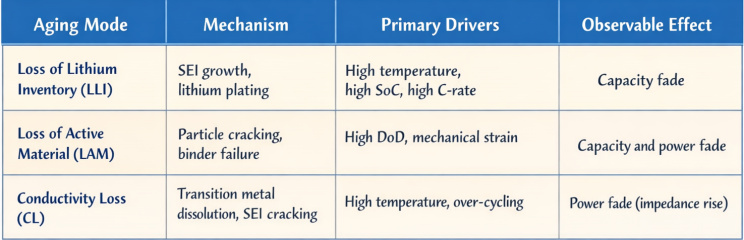
The primary drivers of calendar aging are the ambient temperature and the state of charge (SoC) at which the cells are maintained, while cycle aging is influenced by the depth of discharge (DoD), current waveforms (C-rate), and cumulative energy throughput.
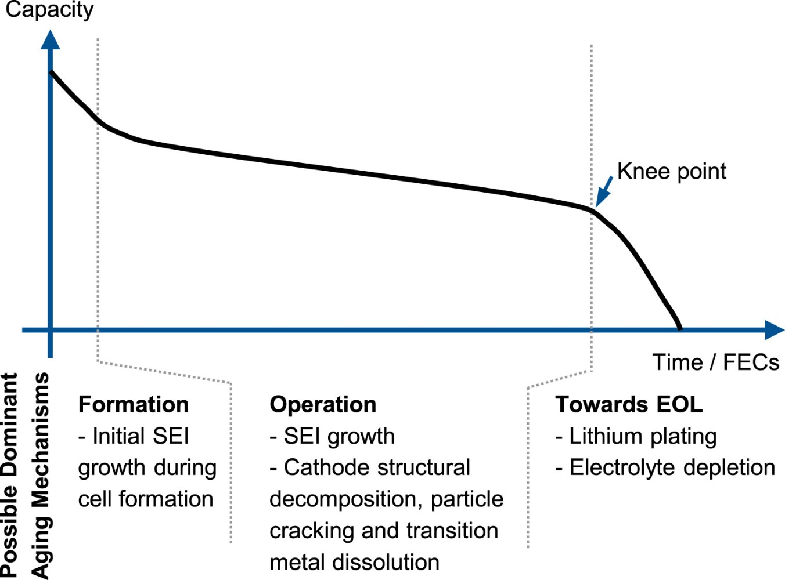
The degradation curve of a lithium-ion battery often remains relatively linear for a significant portion of its life before reaching a knee-point, after which the rate of capacity loss accelerates dramatically. Extending the project lifecycle is essentially the science of delaying this knee-point through rigorous control of external stress factors.
Comparative Analysis of Cell Chemistries in Lifecycle Context
The choice of battery chemistry is the first strategic decision in BESS project development, with Lithium Iron Phosphate (LFP) and Nickel Manganese Cobalt (NMC) being the two dominant technologies. For stationary storage applications, LFP has increasingly become the industry standard due to its inherent safety and superior longevity. LFP chemistries utilize strong covalent bonds within the iron phosphate cathode, which provide structural robustness even under high temperatures or stressful cycling conditions. In contrast, the layered structure of NMC cathodes is more susceptible to micro-cracking and stress-induced degradation during the intercalation process.
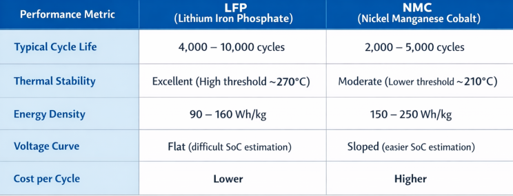
The flat voltage curve of LFP, while indicative of stable performance, introduces a significant challenge for Battery Management Systems (BMS). Between 35% and 95% SoC, the voltage of an LFP cell remains almost constant, making it difficult to accurately estimate the remaining capacity using voltage measurements alone. This can lead to SoC estimation uncertainties as high as 49% for LFP systems, compared to just 8% for NMC. For LFP lifecycle extension, it is therefore imperative to employ advanced algorithms that combine the coulombic method with Kalman filtering to avoid the detrimental effects of accidental over-charging or deep discharging.
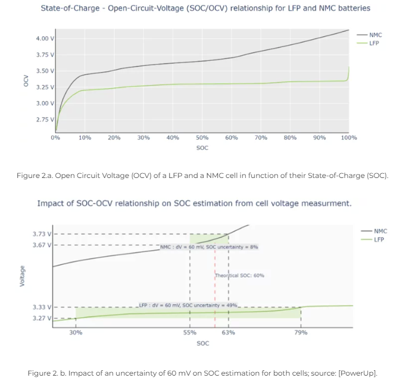
Thermal Management and Engineering for Uniformity
Temperature is the single most influential external variable affecting the rate of battery degradation. A battery dwelling above 30°C (86°F) is considered to be in an elevated temperature state, which accelerates the chemical side reactions responsible for capacity loss. Conversely, operation at extremely low temperatures increases electrolyte viscosity and reduces ionic conductivity, promoting lithium plating during charge. The goal of thermal management in a BESS is not merely to keep the batteries cool, but to maintain a uniform temperature distribution across all cells in a pack.
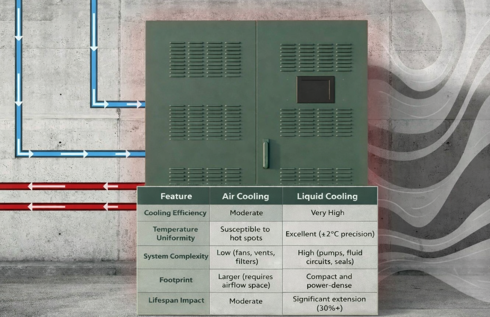
Effective thermal management is also a critical component of fire safety. High-density energy storage systems generate substantial heat during rapid discharge, and if this heat is not removed efficiently, it can trigger thermal runaway—a self-sustaining exothermic reaction that can lead to fire or explosion. Sophisticated thermal management systems are designed to operate alongside the BMS to trigger alarms or emergency shutdowns if temperature limits are exceeded, ensuring compliance with global safety standards such as UL 1973 and UL 9540.
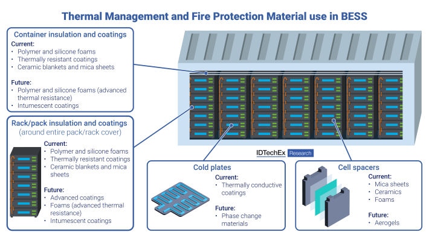
Hierarchical Software Architecture and Operational Controls
The lifecycle of a BESS is increasingly governed by software. A modern BESS project utilizes a hierarchical control architecture consisting of the Battery Management System (BMS), the Energy Management System (EMS), and the Supervisory Control and Data Acquisition (SCADA) system. Each layer plays a specific role in balancing the immediate performance needs of the grid against the long-term health of the battery asset.
The Role of the Battery Management System (BMS)
The BMS is the primary guardian of the battery cells, monitoring parameters such as voltage, current, and temperature at the module or pack level. One of its most critical functions is cell balancing. Even in high-quality manufacturing runs, no two cells are perfectly identical; variations in internal resistance and capacity mean that some cells will charge or discharge faster than others. Without balancing, the weakest link in a string of cells will determine the performance of the entire pack, leading to underutilization and accelerated wear on the overworked cells.
Active balancing is superior to traditional passive balancing for lifecycle extension. While passive balancing simply dissipates excess energy from overcharged cells as heat through a resistor, active balancing redistributes that energy to weaker cells within the pack. This not only improves the overall energy efficiency of the system but also minimizes the thermal stress on the cells, potentially adding years to the operational life of a commercial or utility-scale BESS.
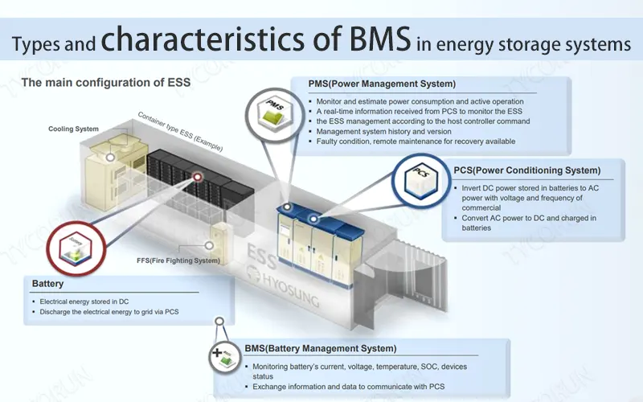
Energy Management System (EMS) and Dispatch Optimization
While the BMS focuses on internal safety, the EMS acts as the strategic brain, making high-level decisions about when to charge or discharge based on grid demand, electricity prices, and renewable generation forecasts. For lifecycle extension, the EMS must implement SoH-aware (State of Health) dispatch strategies. As a battery ages and its internal resistance increases, the EMS can dynamically adjust the power setpoints to reduce the peak current stress on degraded cells.
Modern EMS platforms use sophisticated optimization models to manage the trade-off between immediate revenue and long-term degradation. For instance, by restricting the operational SoC window to 20%–80% and avoiding deep discharges (DoD gt; 80%), the EMS can significantly reduce the mechanical strain on the battery electrodes. For LFP systems, research has shown that maintaining a lower average SoC—even if the system is cycled frequently—results in less capacity fade than holding the batteries at a high state of charge for extended periods.
SCADA and Data Historians
The SCADA system serves as the nervous system of the project, gathering real-time data from field devices and transmitting commands from the EMS to the hardware. The integration of a data historian allows for the collection of time-series data, which is essential for tracking performance trends over the project's life. This historical data provides the foundation for warranty compliance and supports the development of predictive maintenance models.
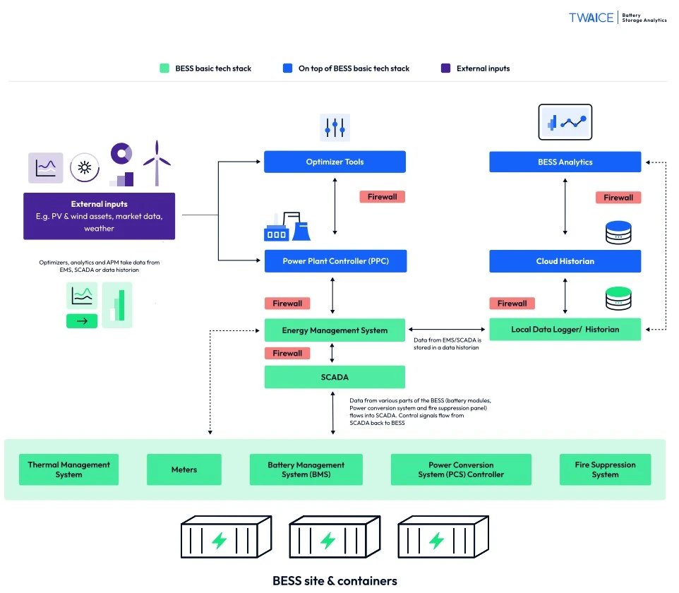
Strategic Augmentation and Overbuild Planning
A critical challenge in BESS project design is accounting for the inevitable decline in battery capacity over a twenty-year horizon. Developers typically choose between two primary strategies: initial overbuild or periodic augmentation.
Initial Overbuild Strategy: In an overbuild strategy, the developer installs more battery capacity at the start of the project than is required to meet the initial contractual obligations. For example, a project designed for a 100 MWh capacity might be installed with 115 MWh of batteries. This 15% buffer allows the system to continue meeting its performance guarantees even as the cells naturally degrade over the first five to seven years.
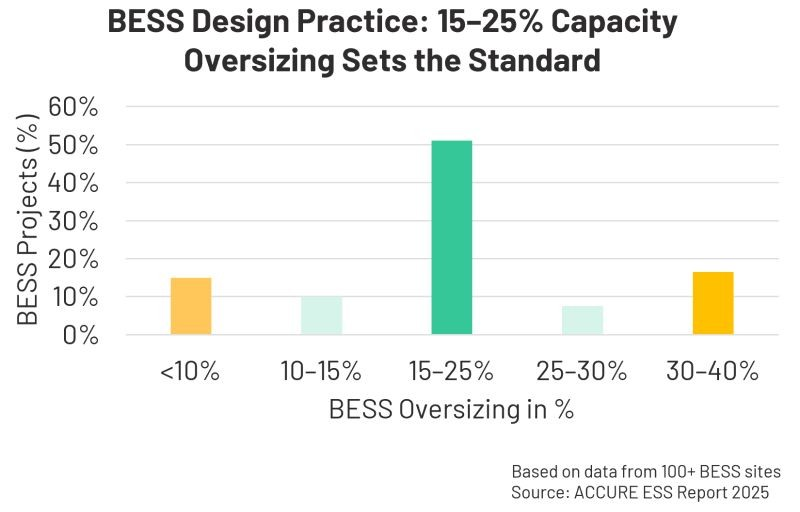
Periodic Augmentation Strategy: Periodic augmentation involves adding new battery capacity as the system ages, typically every five years. This allows the developer to lower the initial CAPEX and potentially benefit from future declines in battery prices. However, augmentation is technically complex. New batteries must be compatible with the existing inverters and control systems, and mixing different battery generations can lead to impedance mismatches and balancing issues.

Economic Optimization: LCOE and Revenue Stacking
The economic success of a BESS project is measured by the Levelized Cost of Storage (LCOS) or Levelized Cost of Energy (LCOE). These metrics represent the total lifetime cost of the system divided by the total energy it discharges. Extending the system lifecycle directly reduces the LCOS by spreading the initial CAPEX over a larger volume of discharged energy.
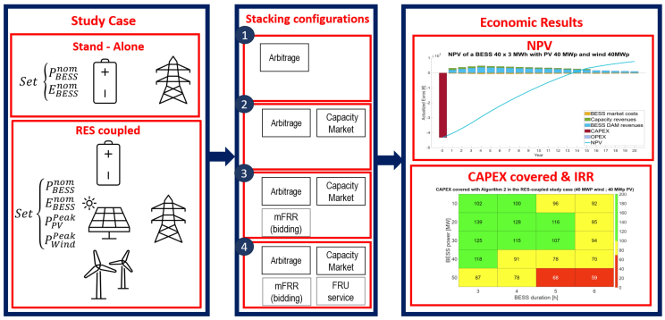
Site Selection and Environmental Resilience
The physical environment of a BESS project is a major determinant of its longevity. Site selection must account for environmental stressors that can accelerate battery degradation or pose safety risks. Ideal parcels for BESS projects share characteristics such as minimal grading needs (<5% slope), proximity to substations with available capacity, and location outside of flood zones or high-fire-risk areas.
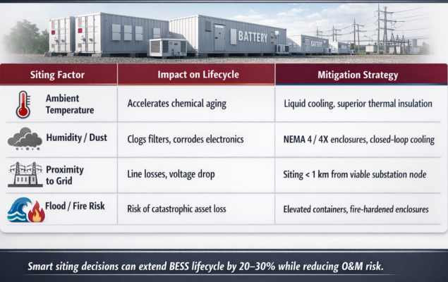
The commissioning phase is another critical period for lifecycle management. Many reported fire incidents and early failures occur within the first six months of operation, often due to system integration issues or poor handling during construction. Rigorous testing of the BMS and thermal systems before full operation is essential to ensure that the asset starts its lifecycle in peak condition.
Evolving Safety Standards and Regulatory Compliance
Compliance with safety standards is not only a matter of public safety but also a critical factor in project bankability and insurance. The National Fire Protection Association (NFPA) standard 855 and the Underwriters Laboratories (UL) 9540 standard are the foundational codes for BESS installation and operation.
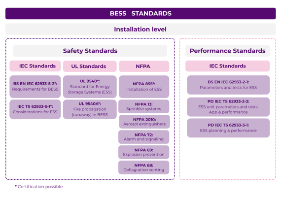
The upcoming 2026 edition of NFPA 855 is expected to introduce stricter requirements for large-scale fire testing (LSFT) and intentional ignition testing. These standards are moving away from evaluating individual cells toward assessing the fire propagation risks of fully integrated battery containers. For developers, this means that the design of the BESS must incorporate robust fire suppression systems (FSS) and thermal barriers to prevent a single cell failure from escalating into a catastrophic facility-wide event.
A new North American standard, CSA/ANSI C800:25, provides the first standardized protocol for testing BESS reliability and quality assurance over their entire operational lifecycle. This standard helps developers demonstrate that their systems can withstand the abnormal environmental stresses and high-duty cycles required for grid-scale operation.
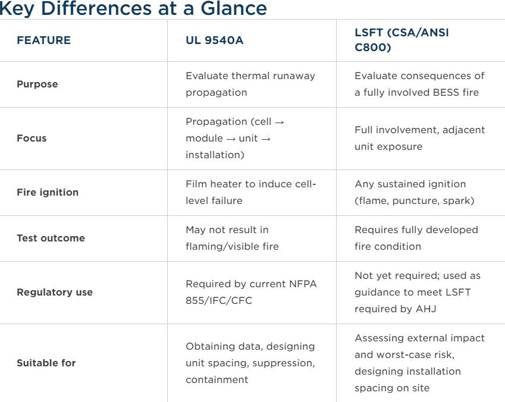
Second Life and the Circular Economy
Extending the lifecycle of a BESS project can also involve a second life for the battery assets. Once a battery capacity has degraded beyond the requirements of utility-scale primary services (typically below 80% SoH), it can often still provide value in less demanding applications. These second-life applications include behind-the-meter storage for commercial buildings, backup power for microgrids, or low-intensity frequency regulation in developing regions.
Repurposing batteries in this way extends the initial environmental and economic investment, providing a buffer until large-scale recycling facilities are fully established. However, the second-life potential of a battery depends heavily on how it was managed during its first life. Batteries that have been subjected to high temperatures or extreme depths of discharge may have non-linear degradation paths that make them unsuitable for reuse.
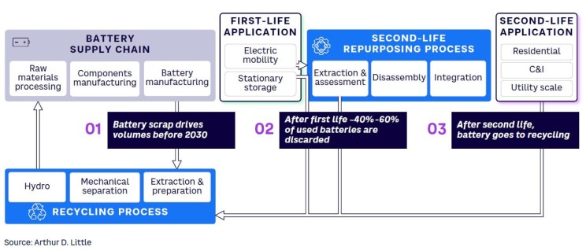
At the true end of their operational life, batteries must be recycled to recover valuable materials like lithium, copper, nickel, and manganese. Hydrometallurgical and direct recycling processes are becoming the preferred methods for material recovery due to their lower carbon footprint compared to traditional smelting. For developers, designing systems with recycling in mind—such as using modular designs that are easy to disassemble—can reduce end-of-life costs and improve the projects overall sustainability metrics.
Conclusions and Practical Implementation Roadmap
Extending the lifecycle of a BESS project is a multifaceted challenge that requires a holistic approach from the earliest stages of planning through the final decommissioning. The durability of the system is a function of the chemical stability of the cells, the precision of the thermal management, the intelligence of the software controls, and the foresight of the capacity augmentation strategy.
To maximize the operational life of a BESS, developers should prioritize LFP chemistry for its inherent longevity and safety, while investing in advanced BMS and EMS platforms that implement SoH-aware control and active cell balancing. The shift toward liquid cooling is essential for maintaining the temperature uniformity required to delay the onset of accelerated degradation. Furthermore, the integration of AI-driven predictive analytics allows for a proactive maintenance regime that identifies and mitigates risks before they lead to failure.